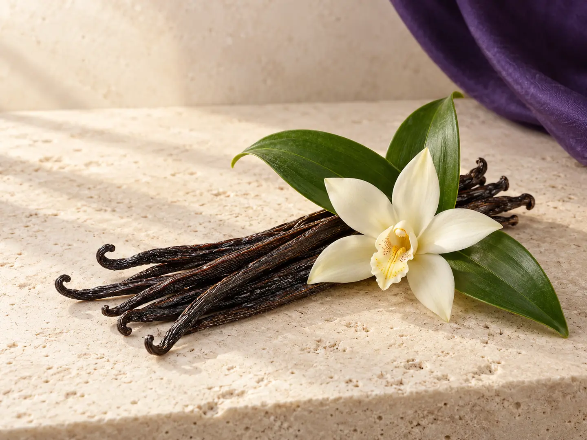

01
Whole Vanilla Beans
Full-length beans for premium culinary, retail, infusion, and presentation-led applications.
Expressive aroma and authentic character, cultivated in Indonesia and prepared for makers around the world.
Discuss Your Needs
Indonesia’s warm climate, volcanic landscapes, and agricultural knowledge can give vanilla a deep, rounded aromatic profile. Each format opens a different way to bring that character into finished products.
Royal Grace Global helps partners navigate those options with clear product conversations and a long-term view.
Choose the format that suits your process, presentation, and desired aromatic expression.
Full-length beans for premium culinary, retail, infusion, and presentation-led applications.
Practical formats for extraction, infusion, batch processing, and visible inclusions.
A versatile dry format for recipes, blends, beverages, and product development.
Begin with authentic Indonesian origin and product character.
Match the format to the intended market and application.
Align requirements, presentation, and practical expectations.
Support a clear path toward a lasting commercial relationship.
Indonesian vanilla can bring warmth, depth, and a premium natural story to a wide variety of products.
Sauces, desserts, dairy, and chef-led creations.
Cakes, chocolate, fillings, biscuits, and sweet goods.
Coffee, tea, functional drinks, and crafted infusions.
Warm aromatic notes for personal care and scent stories.
Ingredient concepts centred on natural origin and aroma.
Share your application, preferred format, and commercial priorities so we can shape a focused product conversation.
Explore Vanilla Partnership